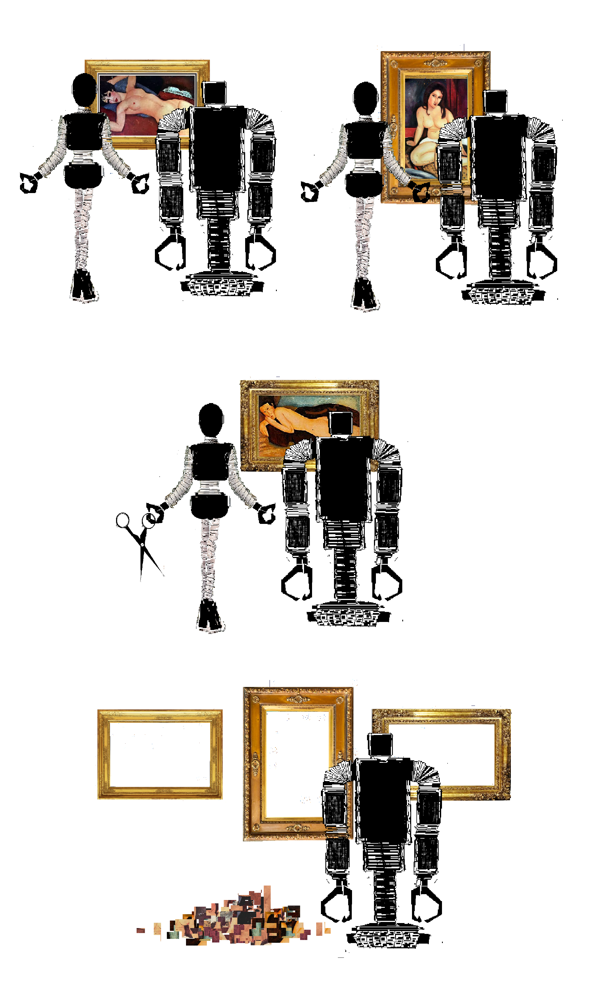
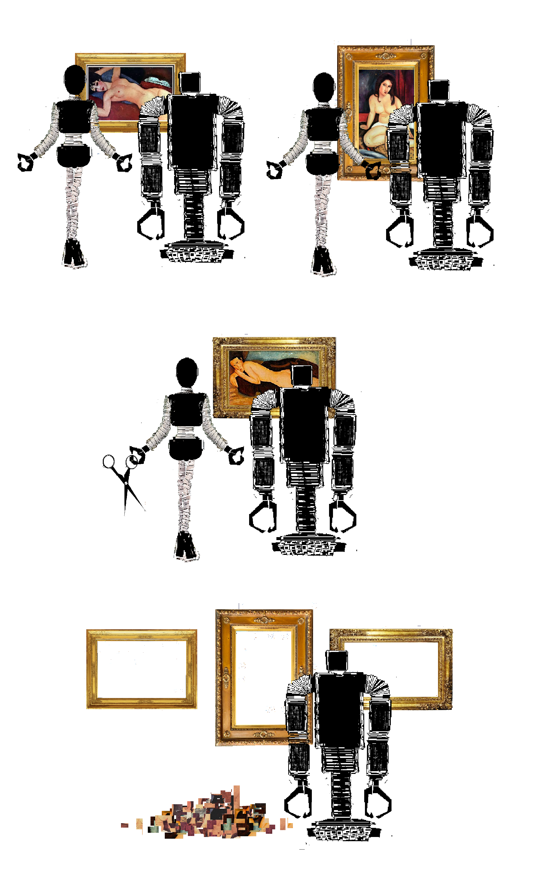
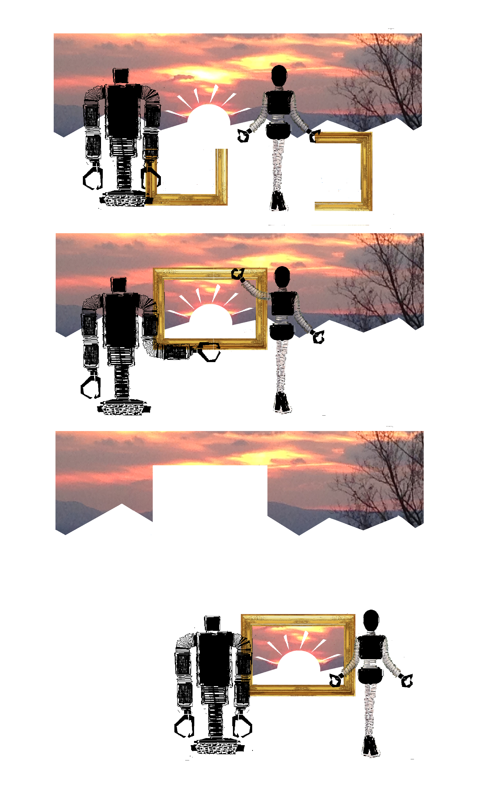
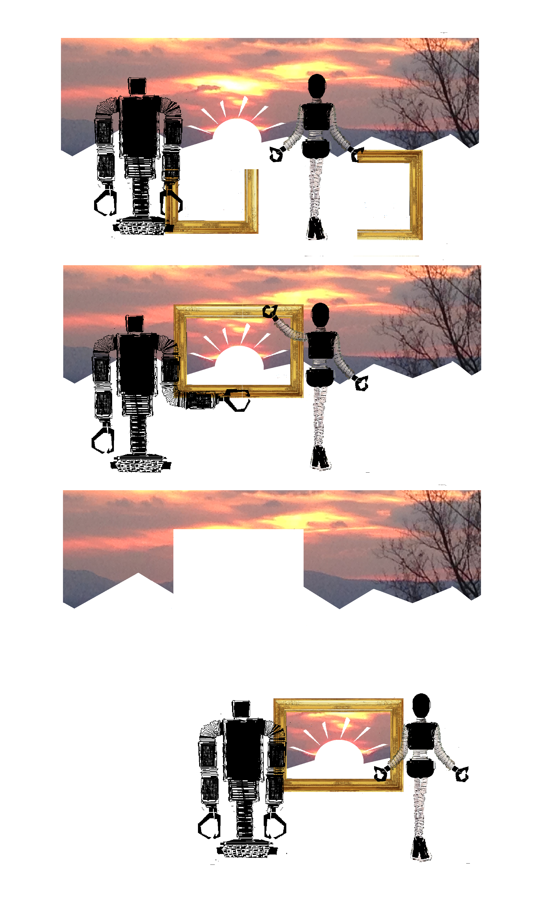
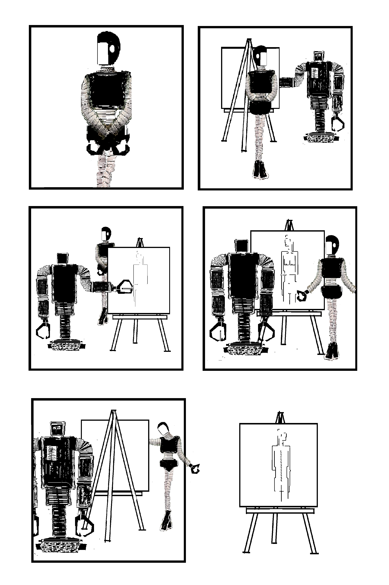
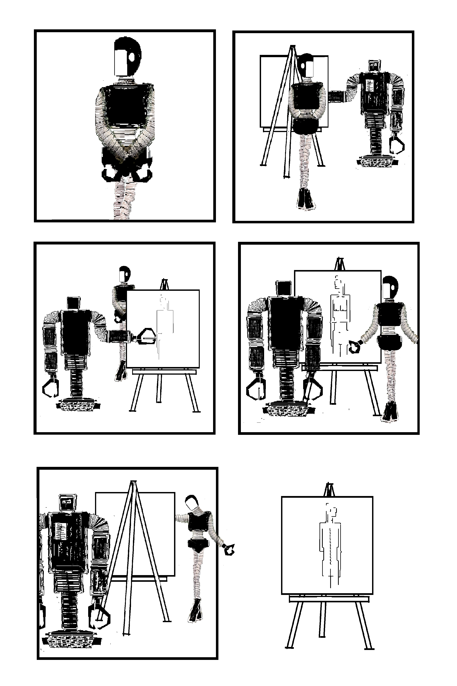
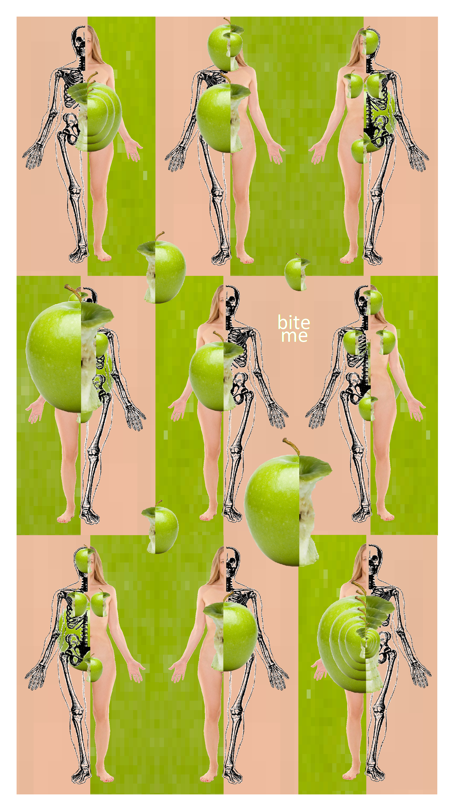
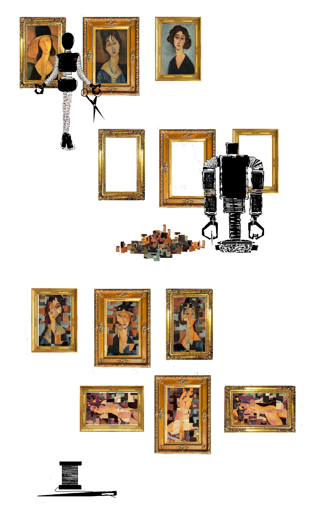
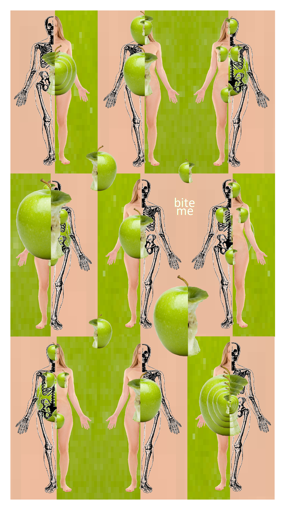
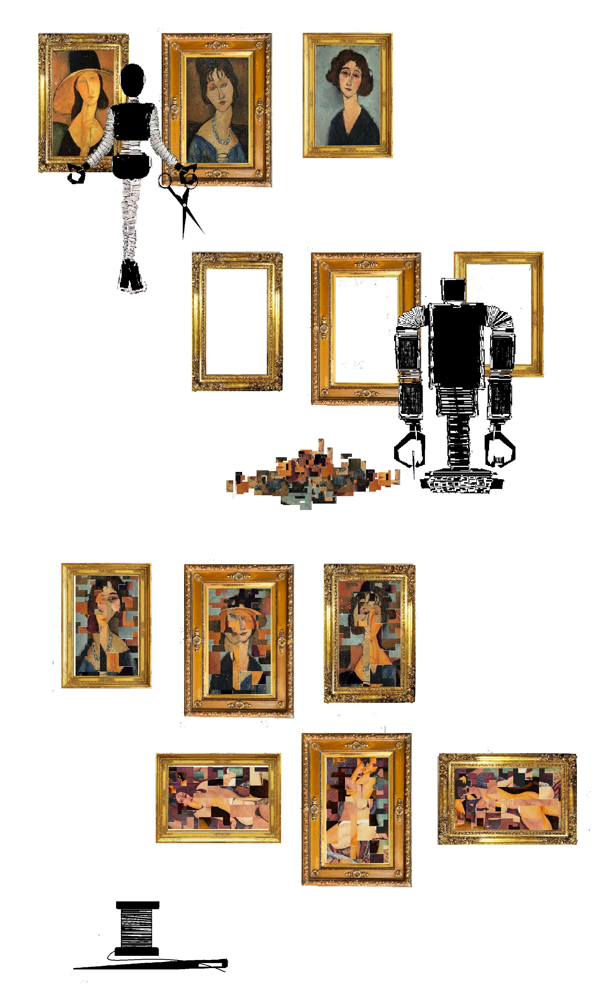

Chris Gavaler | Washington and Lee University
Posted 15 September 2019
 

 

 


 





Chris Gavaler is an associate professor of English at Washington and Lee University, where he serves as comics editor of Shenandoah. He has published two novels: School for Tricksters (SMU 2011) and Pretend I’m Not Here (HarperCollins 2002); and four books on comics: On the Origin of Superheroes (Iowa 2015), Superhero Comics (Bloomsbury 2017), Superhero Thought Experiments (with Nathaniel Goldberg, Iowa 2019), and Creating Comics (with Leigh Ann Beavers, Bloomsbury, forthcoming 2020). His sequential works appears in Redivider, Split Lip, The Ilanot Review, Aquifer, Hair Trigger 2.0, Sonder Review, Two Cities Review, Empty Mirror, and Sequentials.
Recommended citation:
Gavaler, Chris. “Obscured Panels.” Sequentials, vol. 1, no. 3, 2019.